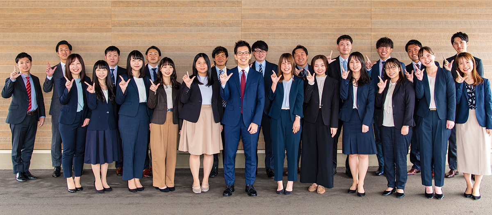
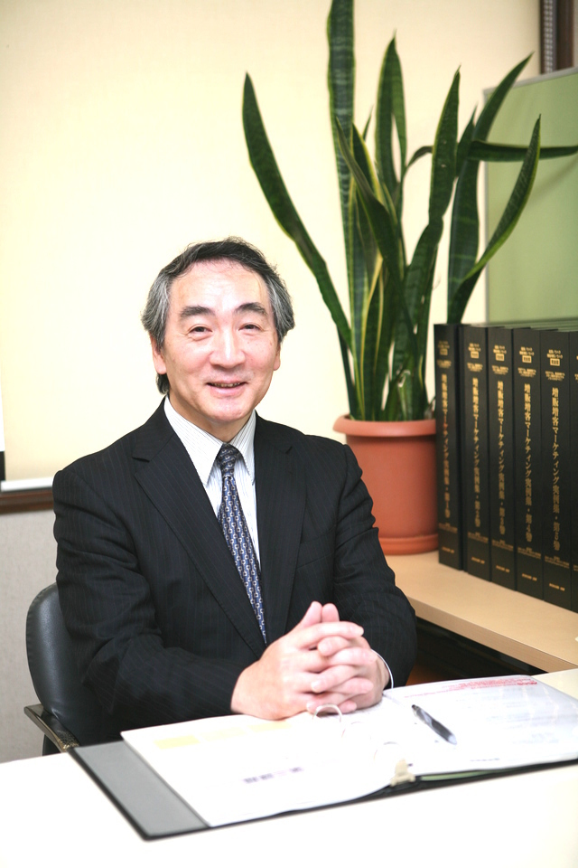
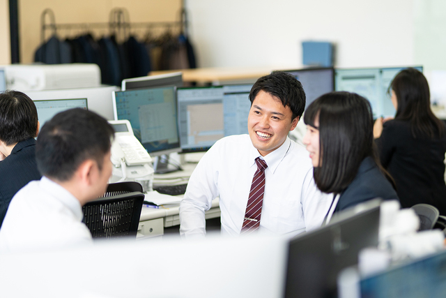
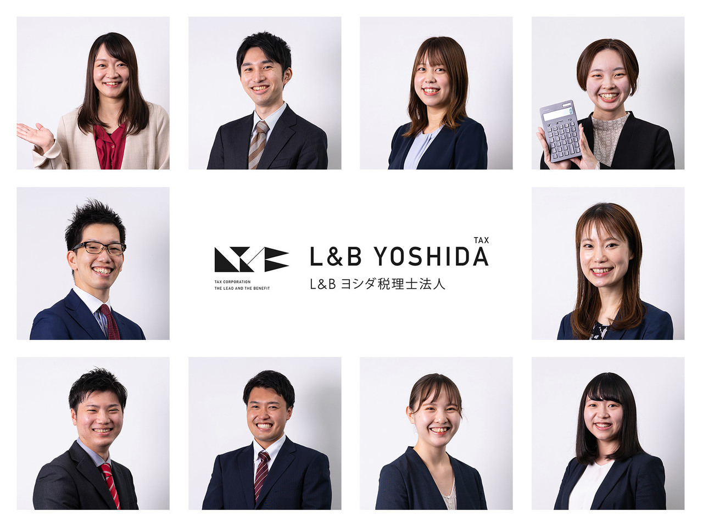
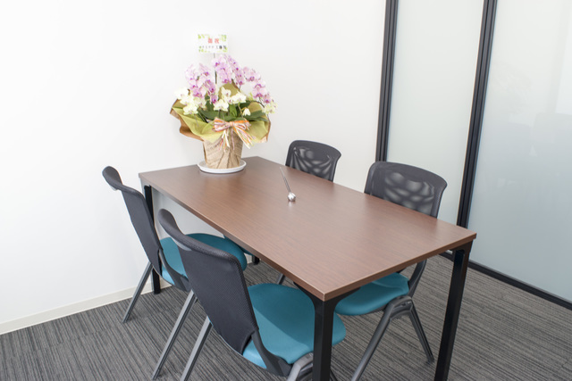
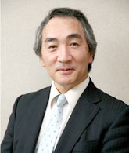

起業サポート
起業時の『社長の右腕』として、サポート致します。「ビジネスモデルに自信を持ちたい」「相談できる人が欲しい」「経理や税金が心配」「業績の上がる経営計画を立てたい」「お金が増える経営がしたい」起業の専門家に相談して、安心して起業しましょう！
高品質で低価格、腰の低い柔軟な税理士が対応！確定申告や起業支援、会社設立、資金調達(融資、補助金、助成金等)もお任せください！

スモールビジネス経営者・起業家のあなたの"右腕"になる。創業60年で積み上げた信頼と、最新のクラウド会計・AIを組み合わせ、経理と経営を加速させます。
『顧問先様1,200超』の私たちが、あなたの右腕になります！フルパッケージで安心価格の起業家特別プラン／300社超に導入したクラウド会計で効率化支援！
元税務署長と提携、税務調査60年のノウハウあり！税務調査経験豊富な税理士と、元国税調査官の社員がおります。
導入400社を突破！大手クラウド会計社の公式事例として紹介されました！freeeの認定アドバイザーランク5つ星(最上位ランク)を獲得！
開業時の融資実行率90％超！(直近1年間統計)／元銀行員6名とSP融資コンサルタント所属！補助金の専門家所属！8,000万円の採択実績あり！
税理士・社労士・中小企業診断士など、国家資格保有者が多数所属しております。他にも元銀行員、SE、補助金専門家、上場企業人事部出身者等が所属。弁護士や司法書士とも連携し、ワンストップで対応しております！
私達は、コミュニケーション満足度で業界日本一を目指しています！経営者様が話したくなる"聴き方"を大切にしています。傾聴のスペシャリスト「産業カウンセラー」が所属しております。
私達はスモールビジネス専門の税理士法人です！(年商3億超の方、大変申し訳ございません) 1,200社超の顧問先様にご利用いただいております。業種は飲食業、製造業、建設業、美容室、歯科、福祉、WEBなど、広く対応。
創業55年、1,000社以上のサポート実績。「起業前」〜「年商3億円」の方に特化したラインナップで、税務・会計・経営のすべてをワンストップでサポートします。
起業時の『社長の右腕』として、サポート致します。「ビジネスモデルに自信を持ちたい」「相談できる人が欲しい」「経理や税金が心配」「業績の上がる経営計画を立てたい」「お金が増える経営がしたい」起業の専門家に相談して、安心して起業しましょう！
会社設立を手数料無しで代行いたします。「資本金の決め方」「決算期の決め方」「会社法上のルール」「消費税で損をしない方法」有利に設立しましょう。ご相談は無料です。
◆金融機関から融資を引き出します。融資成功率95％超！(直近1年の実績)／元銀行員が複数在籍！融資の専門資格者『SP融資コンサルタント』が在籍しております。
◆国や地方自治体から補助金を獲得します。「ものづくり補助金」「事業再構築補助金」「小規模事業者持続化補助金」「新潟県チャレンジ補助金」など、実績多数！支援先様が6,000万円の採択を受けました！(事業再構築補助金)
事業を始めると、『届出』『経理』『税金の申告』そして『経営判断』が必要です。経営者様が本業に専念できるように専門家がサポートいたします。私達は「税金の計算」だけではなく、経営について、一番の相談役となります！
経理を代行いたします。帳簿付けや経理は経理のプロに任せ、経営者様は「経営」に専念してください！
クラウド会計ソフトの導入方法や、使用方法のサポートを行います。会計ソフト『freee』の導入サポートは、新潟県内トップクラスの実績です。マネーフォワード会計も多数の導入実績があります。
事業を起こすと確定申告が必要です。「適切な節税」「特例の適用」「計算ミスや勘違いの防止」創業55年、申告数3,000件以上の実績で、確定申告をサポート致します。
相続が発生した場合の税の申告・相続対策までトータルでサポート致します。次の代を考慮した二次相続対策、トラブル発生時の提携弁護士等の専門家紹介もスムーズです。
税務調査に立ち会います。税務調査で大切なのは、「事前準備」「知識」「交渉力」です。「税務調査官の言われるがまま」にならないようにしましょう。税務調査経験豊富な税理士と、元国税調査官の社員がおります。国税OBの税理士を顧問に迎えております。スポット対応も可能です。
社員を雇用すると、給与計算が必要です。給与の計算、給与明細書の作成・発送、それに伴う税金納付書の作成等、代行いたします。
実は、税理士は万能ではありません。税理士により得意分野・苦手分野が異なります。業務毎に依頼しましょう。(セカンドオピニオン) 税理士変更についても、お気軽にご相談ください。
経営計画は、「将来の予測」ではなく、「自社の業績を引き上げる」ツールです。目標を高く設定することで、達成しようとする力が働きます。①会社の目指す方向性(ミッション・ビジョン) ②目標となる数字の計画 ③行動の計画。経営・数字のプロがマンツーマンで、業績を上げるお手伝いをします。
「赤字を改善したい」「利益を出したい」「お金を残したい」こんなお悩みに有効なサービスが、「利益1,000万円達成コンサル」です。①経営計画の数字を基に「業績アップする行動」の設定 ②モニタリング「行動の実行度」「数字の達成度」 ③①の改善案の提案
売上アップ・利益アップをサポート致します。私達は、『顧客視点』を大切にしたマーケティングが得意です。WEB集客・SNS集客・オフライン集客等について、強みの棚卸、魅せ方、差別化、ブランド化等により、売上アップ・利益アップをサポート致します。
「利益が出ればすべてよし」実は違います。大切なのは『お金を残す』ことです。利益が出ていてもお金が回らないことがあります。そうならないように、「財務・資金繰り」を大切にしましょう。財務のプロががお手伝い致します。
代表者が一定の年齢を迎えますと、引退を意識されると思います。事業承継で大切なことは「早めの準備」だと考えています。スムーズな事業承継に向け、税務や相続、組織のバランス取りを十分に考慮し、事業承継をお手伝い致します。
人手不足を解消します。①採用ペルソナ設定 ②インディード出稿(ペルソナに向けた出稿、SEO対策、適切な写真設定、適切な予算設定) ③面接同席(履歴書チェック含む) 実績：求人を出した当日に、10名の応募あり(コストは2,500円のみ)／3年連続離職者ゼロ(自社実績)等。「求職者目線」を意識したコンサルティングです。
「挑戦し続けること」「お話をよく聞くこと」——父から教わり、最も大切にしている心がけ。お客様とともに挑戦し続けます。

『挑戦し続けること』
『お話をよく聞くこと』
これが父から教わり、私が最も大切にしている心がけです。
大学在学中に行政書士試験に合格し、社会人になってからはコロナ、伊藤ハムで営業経験を積みました。営業は大変な面もたくさんありましたが、「ありがとう」と言ってもらえるやりがいがありました。
その後、結婚を機に父が経営する会計事務所（当時は吉田税務会計事務所）に入所しました。もともと数字は好きでしたので、仕事は楽しく、少しづつ実務経験を重ねながら、税理士の試験勉強、子育てと3足のわらじ生活を経て、無事税理士となりました。
父から経営を引き継いでからも、組織がここまで続くことができたのは、お客様とのつながりがあってのものだと感じております。IT化は止めどなく進み、「経営のしかた」も日々変化しています。当法人でも、昔ながらの仕事を続けるつもりはありません。お客様とともに挑戦し続けていきたいと思いますので、どうぞよろしくお願い致します。


地元新潟に2拠点＋東京にコンサル会社。新潟で60年、専門家60名が所属する税理士法人グループ。「経営者の最も身近な相談役」として、経営・税務・会計のあらゆる悩みに寄り添います。
「融通が利く」「お話をよく聞く」「迅速かつ正確」——お客様を第一に考える会計事務所として、日々実行している21の約束です。
新潟県三条市東裏館の旧・吉田税務会計事務所。綺麗なオフィスで笑顔の対応を心がけています。


当法人は、新潟市中央区と、三条市にオフィスを構えております。新潟市中央区、西区、東区、南区、見附市、燕市、加茂市等の近隣のお客様に数多くご利用いただいているのみならず、長岡市、上越市、新発田市、小千谷市、胎内市等、遠方のお客様にも多数顧問契約を結んで頂いております。距離を感じさせない対応を心がけておりますので、ぜひご検討ください。
当会計事務所の強みは、「スモールビジネスについての専門性」「コミュニケーション」です。お客様のモチベーションが上がるように、また辛い時は前を向いていただけるように、常に意識してサービスを提供いたします！まずは無料相談をご活用ください！